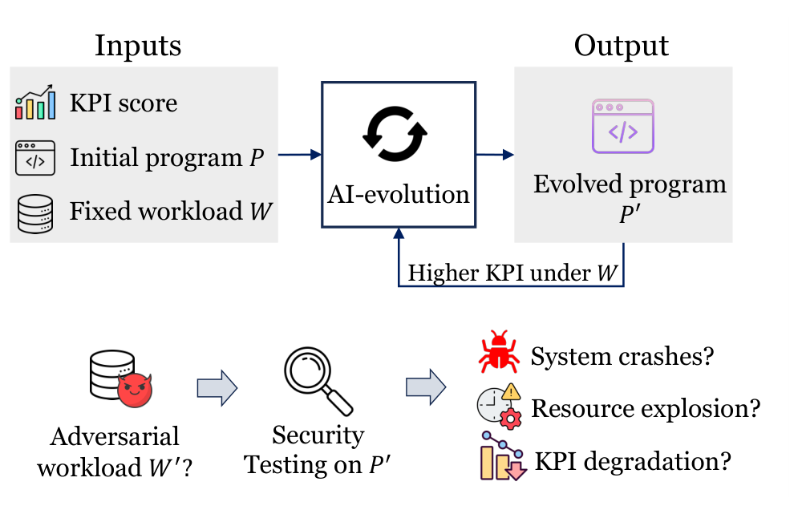
1. Введение
В сообществе компьютерных систем растёт интерес к оптимизациям систем, управляемым ИИ (AI-driven systems optimization, ADSO): ИИ-агенты итеративно переписывают системные программы, а оценщики отбирают варианты с более высокими метриками. Фреймворки вроде AdaEvolve и Engram сообщают об улучшениях на 12–60% по сравнению с алгоритмами, спроектированными людьми. Эти результаты многообещающи, однако вызывают практическую озабоченность: программы, эволюционированные ИИ, могут хуже работать на ранее невиданных нагрузках и демонстрировать регрессии масштабируемости.
С учётом высокой скорости изменений в системах, управляемых ИИ, и частых модификаций кода требуются автоматизированные способы выявления подобных слабостей. Однако это нетривиальная задача: нужно поддерживать разные типы приложений и входных нагрузок, искать именно дивергентные слабости относительно эталонной программы, проверять разные свойства — корректность, оптимальность и ресурсы, — а также находить как можно больше различных первопричин в рамках фиксированного временного бюджета.
Авторы предлагают AICHILLES — агентную систему для выявления скрытых слабостей, «ахиллесовой пяты», в системных программах, эволюционированных ИИ. AICHILLES рассматривает исходную программу P, написанную человеком, как дифференциальный оракул для эволюционированной программы P′. Для заданной валидной рабочей нагрузки система запускает обе программы и проверяет четыре типа регрессий: ошибки корректности, регрессии по времени исполнения, регрессии по использованию оперативной памяти и регрессии по оптимальности решения; общая схема этого дифференциального поиска показана на рис. 1.
AICHILLES сочетает три проектных решения. Во-первых, система извлекает параметры рабочей нагрузки из оценщика и с помощью агента выводит допустимые диапазоны и межпараметрические ограничения. Во-вторых, поиск разделяется по типам слабостей: отдельный подагент фокусируется на своём классе регрессий, чтобы не сводить весь поиск к одному сценарию. В-третьих, AICHILLES использует покрытие по частоте исполнения кода как сигнал поведенческого разнообразия, чтобы не тратить бюджет на многократное нахождение одного и того же дефектного пути.
Цель работы состоит не в критике конкретного исследовательского прототипа, а в выявлении системных слабостей парадигмы ADSO. Поэтому AICHILLES оценивается на трёх фреймворках эволюции с ИИ — Engram, AdaEvolve и OpenEvolve, — пяти прикладных сценариях и двух передовых LLM. В сумме это даёт 30 конфигураций программ, эволюционированных ИИ.
На этом спектре AICHILLES находит 49 различных слабостей четырёх типов. Наиболее распространены регрессии по времени исполнения, далее следуют регрессии по использованию памяти, слабости корректности и регрессии по оптимальности. Эти результаты показывают, что скрытые слабости не ограничиваются одной задачей, моделью или фреймворком. При одинаковом временном бюджете AICHILLES стабильно находит более разнообразные слабости, чем случайный фаззинг, мутационный фаззинг, property-based тестирование и базовый LLM-агент.
AICHILLES также может выступать инструментом смягчения рисков. Одного prompt engineering недостаточно, чтобы предотвратить генерацию рискованных программ в ходе эволюции с ИИ. Однако если добавить обратную связь от AICHILLES в цикл эволюции и штрафовать кандидатов, у которых выявляются слабости, финально отобранные программы избавляются от скрытых слабостей. Цена такой устойчивости — снижение ранее заявленных приростов по бенчмарк-метрикам; в некоторых случаях наиболее устойчивая программа оказывается близка к исходной, написанной человеком.
Раскрытие информации и этические аспекты. Авторы сообщили о выявленных слабостях разработчикам соответствующих систем. Разработчики признали, что если оценщик вознаграждает исключительно по бенчмарк-оценке, более сильная эволюция с ИИ может агрессивнее эксплуатировать целевую функцию и выявлять слепые зоны оценщика.
Работа служит предостережением, уравновешивающим энтузиазм вокруг ADSO. Хотя направление перспективно, перед промышленным внедрением необходимы реалистичные ожидания и автоматизированная проверка устойчивости. Вклады статьи: идентификация скрытых регрессий как рисков безопасности, таксономия слабостей, разработка AICHILLES, оценка на пяти системных приложениях и интеграция AICHILLES в петлю эволюции с ИИ.
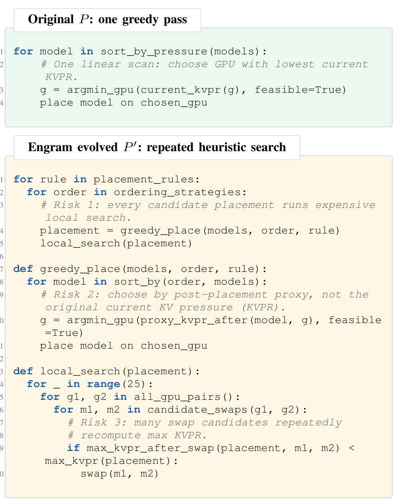
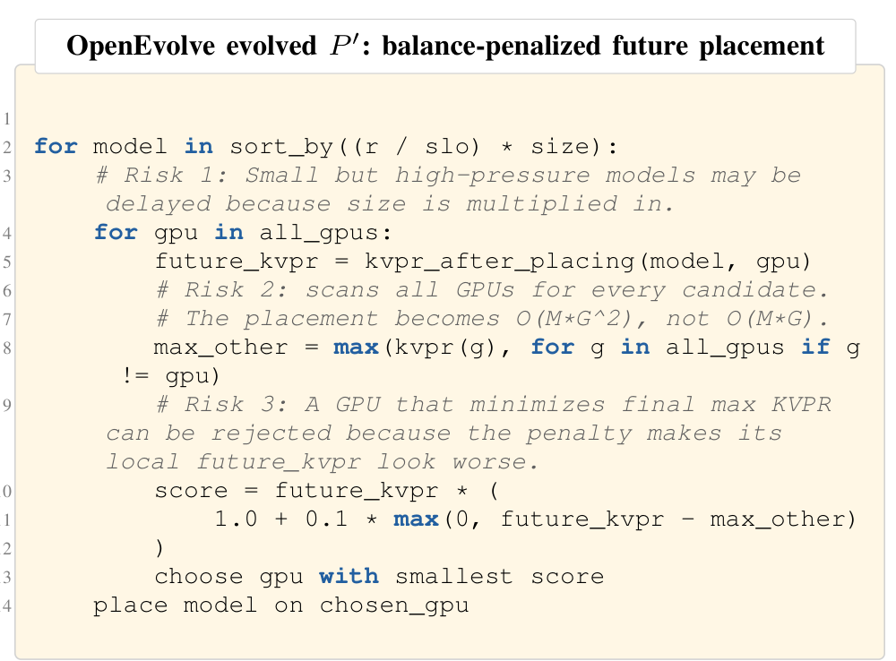
2. Предпосылки и мотивация
Сначала авторы кратко описывают современное состояние оптимизаций систем, управляемых ИИ. Затем приводят мотивирующий пример на одном ИИ-оптимизированном алгоритме, показывающий необходимость автоматизированного инструмента вроде AICHILLES.
2.1. Эволюция системных алгоритмов с помощью ИИ
Такие работы, как AlphaEvolve и OpenEvolve, демонстрируют, что эволюционный поиск, управляемый LLM, способен обнаруживать улучшенные алгоритмы и оптимизировать критически важную вычислительную инфраструктуру. Это вдохновило парадигму ADSO как перспективный подход для автоматизации проектирования базовых системных алгоритмов.
Подход уже применён к широкому спектру задач: оптимизации баз данных, планированию транзакций, балансировке нагрузки в эксперт-параллельных архитектурах, межоблачному планированию задач, оптимизации префикс-кэша LLM и размещению моделей с учётом KV-кэша. Традиционно такие системы опирались на вручную разработанные эвристики. Привлекательность ADSO состоит в снижении ручных усилий и потенциале более оптимальных решений.
На высоком уровне ADSO формулирует проектирование системных алгоритмов как итерационный цикл оптимизации: агент ИИ предлагает кандидатные программы, оценщик выставляет им оценки на заданных нагрузках, а кандидаты с высокими оценками сохраняются и направляют дальнейшую эволюцию. OpenEvolve использует вручную настроенную стратегию мутаций; AdaEvolve заменяет её динамическим контролем прогресса; Engram разделяет исследование между «свежими» контекстами агента и сохраняет прогресс через постоянный архив и исследовательский дайджест. Все эти фреймворки демонстрируют значительные выигрыши, включая сообщения о превосходстве человеческого state-of-the-art на 12–60% по нескольким системным задачам.
2.2. Мотивирующий пример
Рассмотренные задачи часто лежат на критическом пути промышленных систем: они определяют распределение ресурсов, планирование работы, маршрутизацию трафика и обслуживание моделей. Поэтому потенциальные слабости программ, эволюционированных ИИ, могут напрямую влиять на безопасность, производительность и устойчивость.
Авторы вручную проанализировали ADSO, применённое к Prism — системе размещения моделей с учётом кэша для LLM-сервисов, основанных на KV-кэшах. KV-кэши повышают эффективность инференса, но потребляют память GPU. Когда множество моделей разделяют один GPU-кластер, система обслуживания должна решить, где разместить каждую модель, чтобы сбалансировать нагрузку по запросам и давление на KV-кэш.
Prism определяет метрику балансировки KVPR (KV-cache Pressure Ratio) как прокси для предотвращения перегрузки отдельных GPU. Давление на KV-кэш для каждого GPU вычисляется как суммарное давление запросов от назначенных моделей, делённое на оставшийся объём памяти KV-кэша. Качество размещения оценивается через давление на «худший» GPU по набору тестовых сценариев. Чем выше счёт, тем меньше нагрузка концентрируется на наиболее ограниченном GPU и тем ниже риск узкого места по KV-кэшу и нарушения латентностных SLO.
В качестве кейс-стади авторы рассматривают варианты, сгенерированные OpenEvolve и Engram с использованием Claude Opus-4.6. Оба используют метрику KVPR из оригинальной работы по Prism как целевую функцию оценщика. OpenEvolve порождает более крупный жадный вариант, который ранжирует модели по давлению, взвешенному размером модели, и размещает каждую модель с использованием штрафуемой пост-размещенческой оценки KVPR. Engram, напротив, находит значительно более сложную поисковую политику, которая достигает более высокого счёта на исходных бенчмарках Prism. Сопоставление исходной политики и эволюционированных вариантов приведено на рис. 2 и 3.
На первый взгляд обе эволюционированные программы выглядят многообещающе: они заменяют компактную рукописную эвристику более «софистицированными» реализациями. Однако вместе с этим появляются скрытые слабости.
Регрессия по времени выполнения. Исходная программа P использует простую жадную политику: для размещения каждой модели выполняется один проход по GPU, что даёт асимптотику O(MG) при M моделях и G GPU. Программа Engram заменяет это повторяющимся эвристическим поиском, перебирает порядки моделей и правила размещения, а затем запускает локальную «починку» после каждого кандидатного размещения. OpenEvolve сохраняет жадную структуру, но делает выбор GPU дороже: для каждого кандидатного GPU вычисляет давление после размещения и сканирует остальные GPU для расчёта балансирующего штрафа. Это увеличивает асимптотику с O(MG) до O(MG²); экспериментальное проявление этой регрессии вынесено на рис. 4.
Такая регрессия критична, если алгоритм размещения входит в онлайн-контроллер. При изменении интенсивности запросов, добавлении или удалении моделей, а также изменении доступной памяти GPU планировщик должен быстро сгенерировать новое размещение. Политика, которая улучшает метрику давления, но работает значительно медленнее, может задерживать переконфигурацию и оставлять систему в устаревшем состоянии.
Регрессия по оптимальности. Ещё один риск — переобучение: программы, эволюционированные ИИ, получают более высокие оценки на исходных бенчмарках, но оказываются хуже на новых распределениях нагрузок. Программа Engram расширяет пространство поиска за счёт большого числа альтернативных размещений, однако каждый шаг управляется локальным правилом принятия: перенос или обмен сохраняется только при немедленном улучшении внутренней оценки давления. Это может запереть поиск в локально привлекательном, но глобально неоптимальном размещении; пример такой деградации также показан на рис. 4.
OpenEvolve улучшает бенчмарк-счёт за счёт прокси, подстроенного под закономерности конкретных бенчмарков: например, приоритизирует крупные высоконагруженные модели и избегает GPU с прогнозируемым ростом давления. Но такие предположения отсутствуют в исходной целевой функции и могут быть неверными. На нагрузках с большим числом мелких, но высоконагруженных моделей, либо в сценариях, где хорошее решение требует временно задействовать перегруженный GPU, такой прокси может неправильно ранжировать кандидатов и ухудшать итоговое размещение.
Резюме. Ручной анализ показывает, что программа, эволюционированная ИИ, не всегда превосходит исходную программу, написанную человеком. ИИ может заменить простой алгоритм более сложной процедурой, которая эксплуатирует особенности небольшой выборки бенчмарков и игнорирует масштабируемость. В этом смысле исходный человеческий алгоритм может быть менее агрессивным, но более устойчивым в условиях неопределённости.
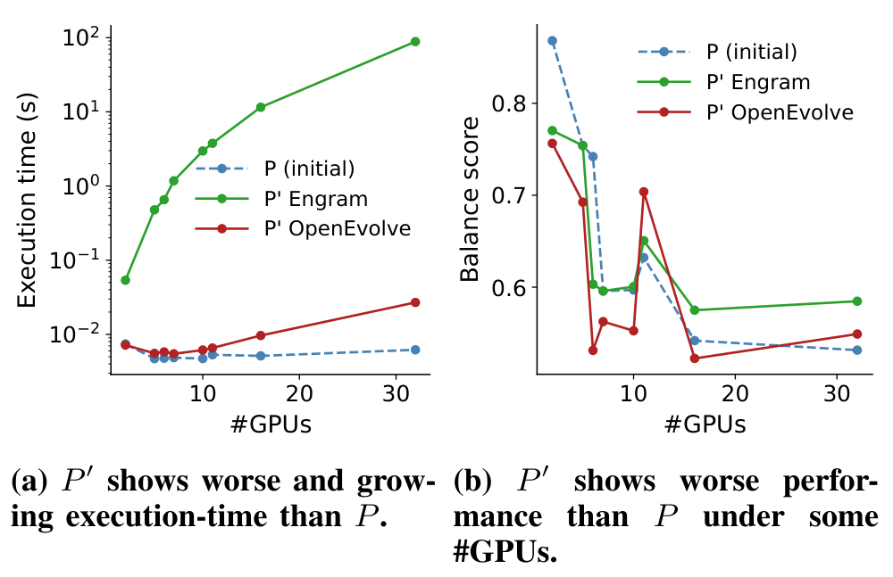
Схемы и результаты из статьи
Ниже собраны оставшиеся рисунки из оригинала. В последующих разделах перевода к ним нужно обращаться напрямую: «см. рис. 5», «см. рис. 6» и так далее, без обезличенных фраз вроде «иллюстрация из статьи».
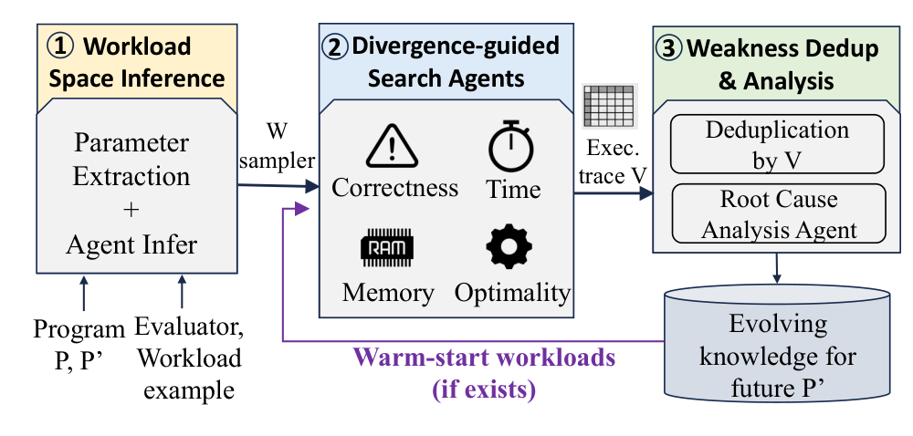
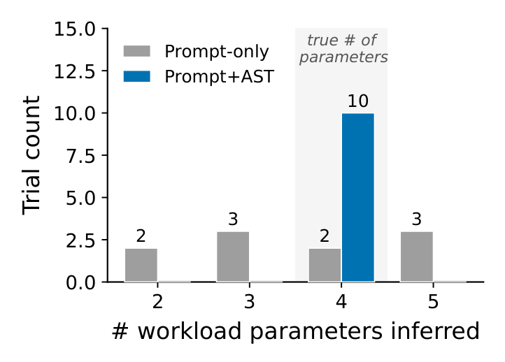
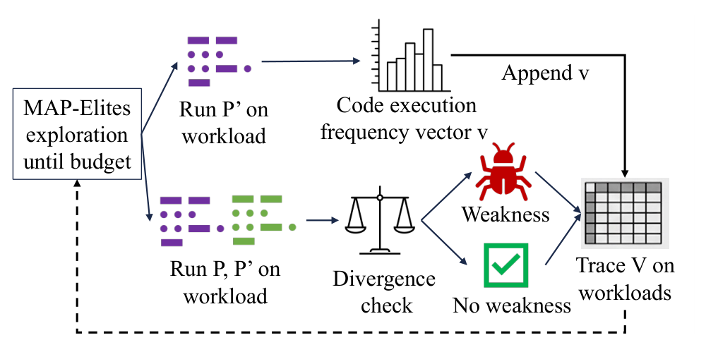
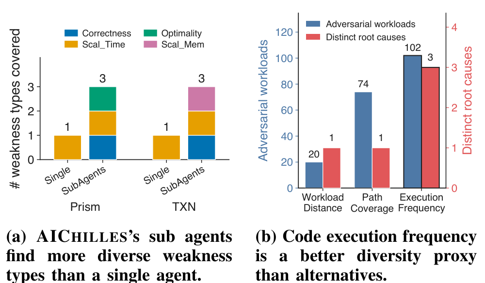
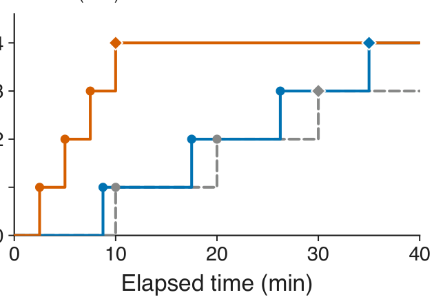
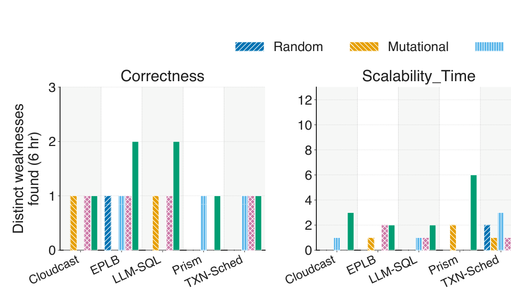
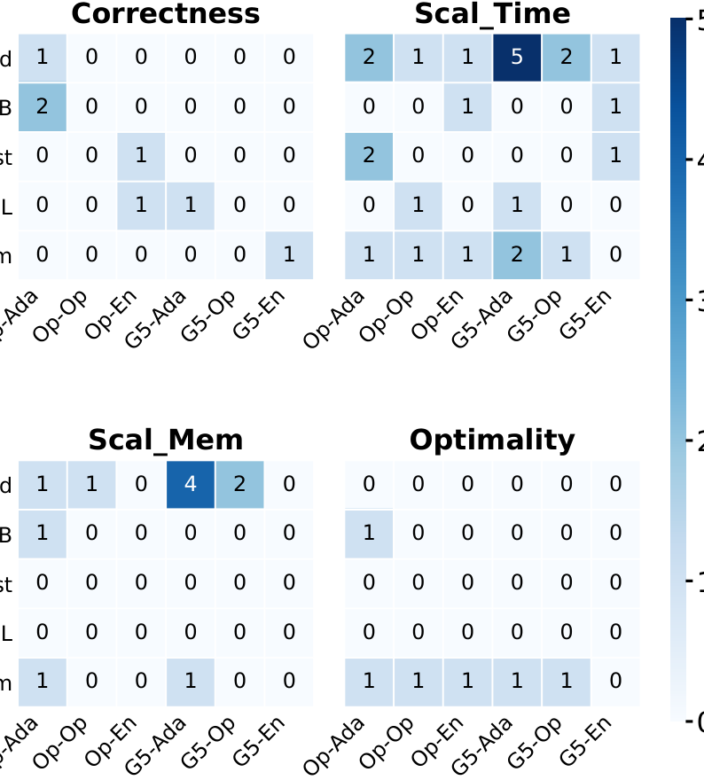
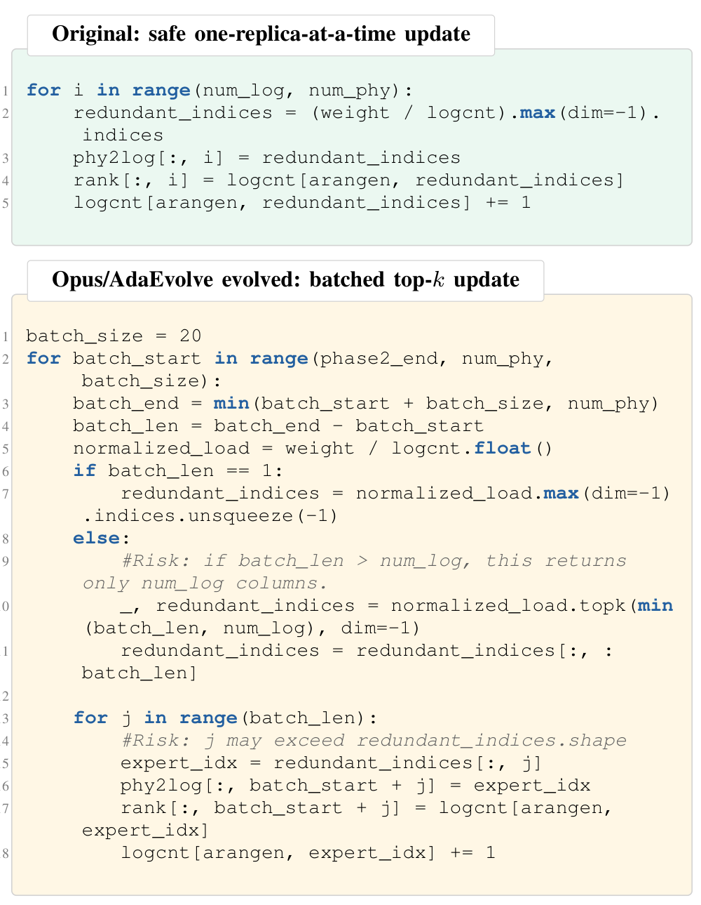
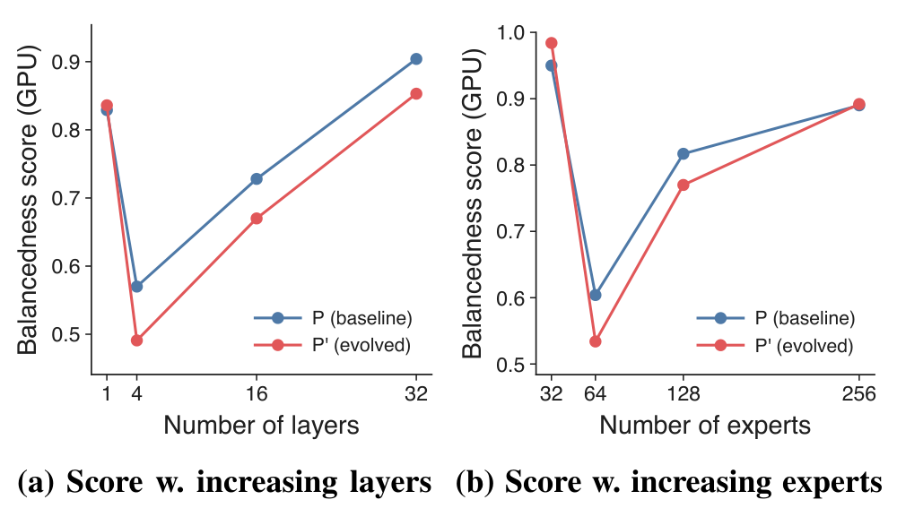
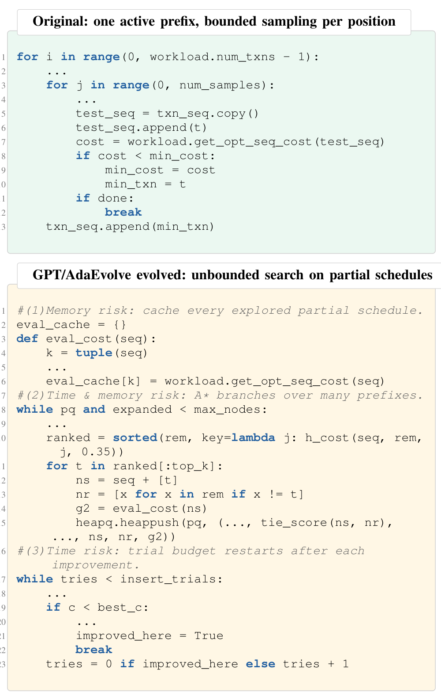
ИИ может «улучшить» метрику и одновременно посадить систему под нагрузкой.
AIChilles показывает опасный класс регрессий: код выглядит лучше на известных сценариях, но проваливается на новых нагрузках, памяти или времени выполнения. Для enterprise-разработки это означает: агент должен проверять не только diff, но и поведение — через запуск, тесты, профилирование гипотез и факты JetBrains IDE, чтобы N+1, тяжёлые выборки и деградации не доезжали до прода.
Перевод подготовлен технической командой Veai на основе arXiv:2606.15834. Первоисточник (англ.): arxiv.org/abs/2606.15834.